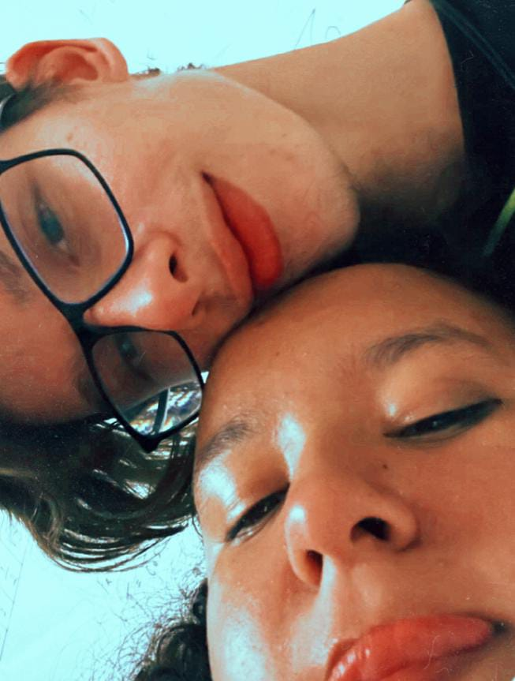

Na festa da casa da minha amiga Leticia, às 22:40 desse dia, na sacada da casa, te pedi em namoro e quando ouvi um "sim" a minha noite se tornou ainda melhor. No dia seguinte quando acordei sabendo que você estava em casa, eu tive muito mais disposição do que teria sem você, na hora do almoço, fiz um macarrão com muito amor para te alegrar. Quando Fomos te levar de volta para sua casa, mesmo no carro com você ja estava com saudades e queria ter ficado mais tempo contigo. Eu te amo tanto minha vida que nem essa página poderia descrever o quanto eu te amo.